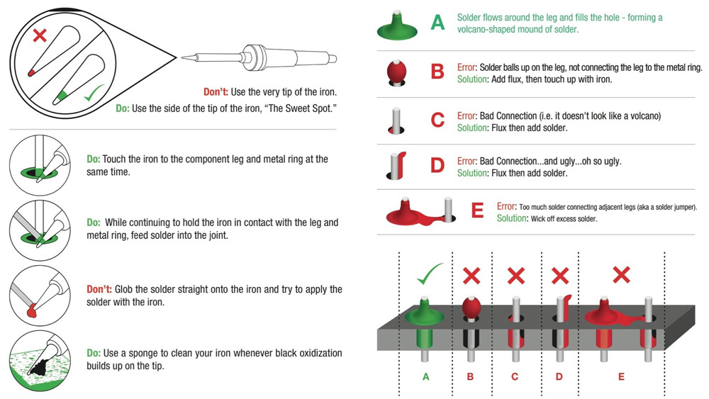

Soldering
Sparkfun How to Solder: Through-Hole Soldering
Recap:
- chisel tips are generally preferred for electronics as they offer better heat transfer than pointed tips
- Set your iron at a good medium heat (325-375 degrees C)
- If you see smoke coming from your solder, turn down the heat
- Tin your tip with solder before each connection to help prep the joint
- Use the side of the tip (aka the sweet spot), not the very tip of the iron
- Heat both the pad and the part you want to solder evenly and at the same time
Step-by-step
- Heat the Joint: Touch the iron tip to both the component lead and the circuit board pad simultaneously; heat the parts, not the solder.
- Apply Solder: Feed a small amount of solder wire into the joint (not against the iron) until the molten solder flows smoothly around the lead and pad.
- Remove and Cool: Remove the solder wire first, then the iron, and let the joint cool naturally without moving the components to avoid “cold joints” or brittle connections.
